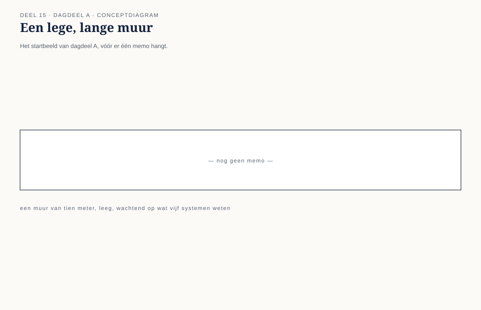
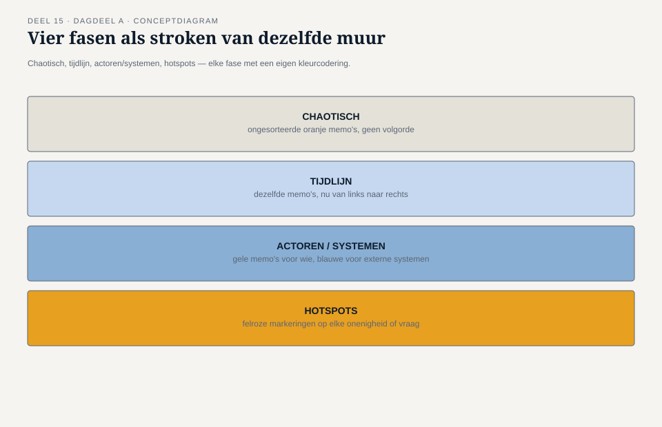
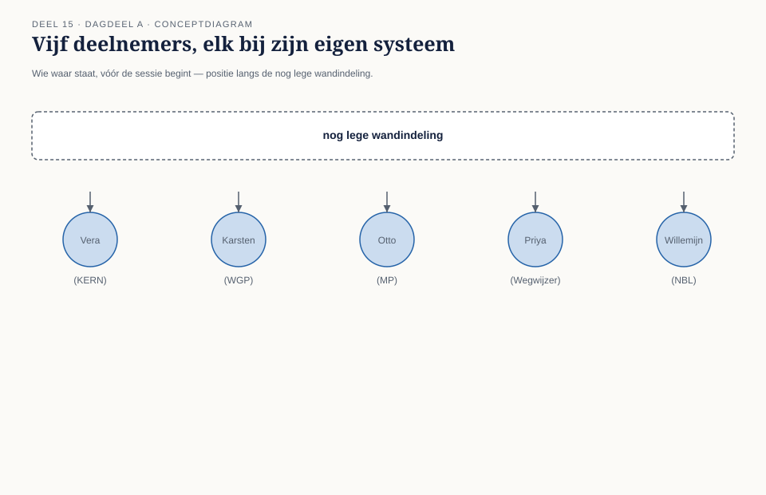
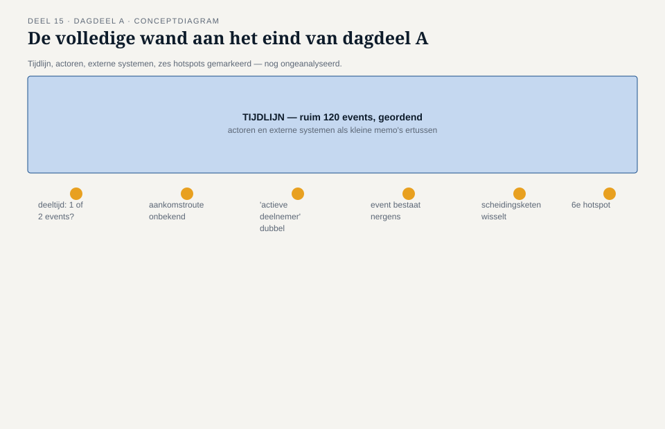
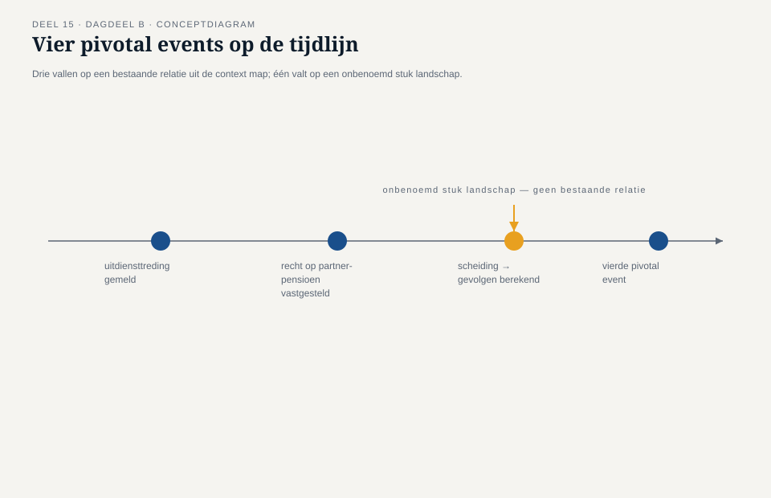
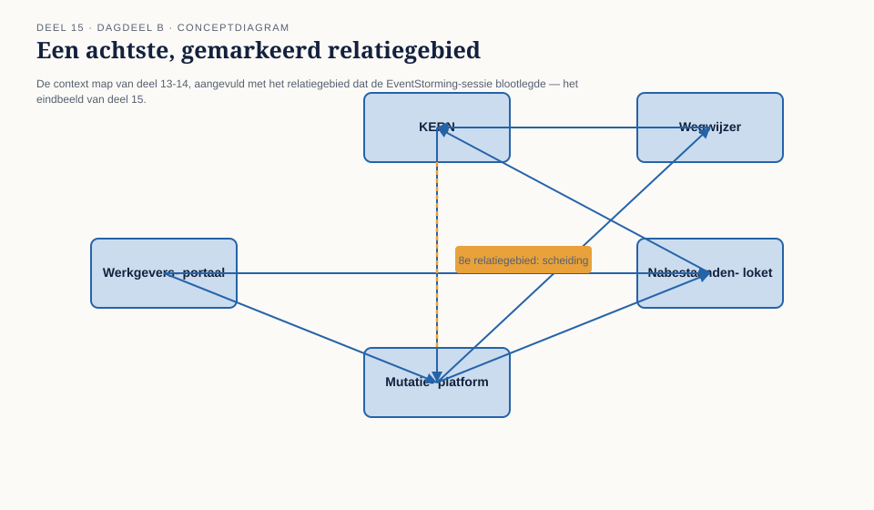
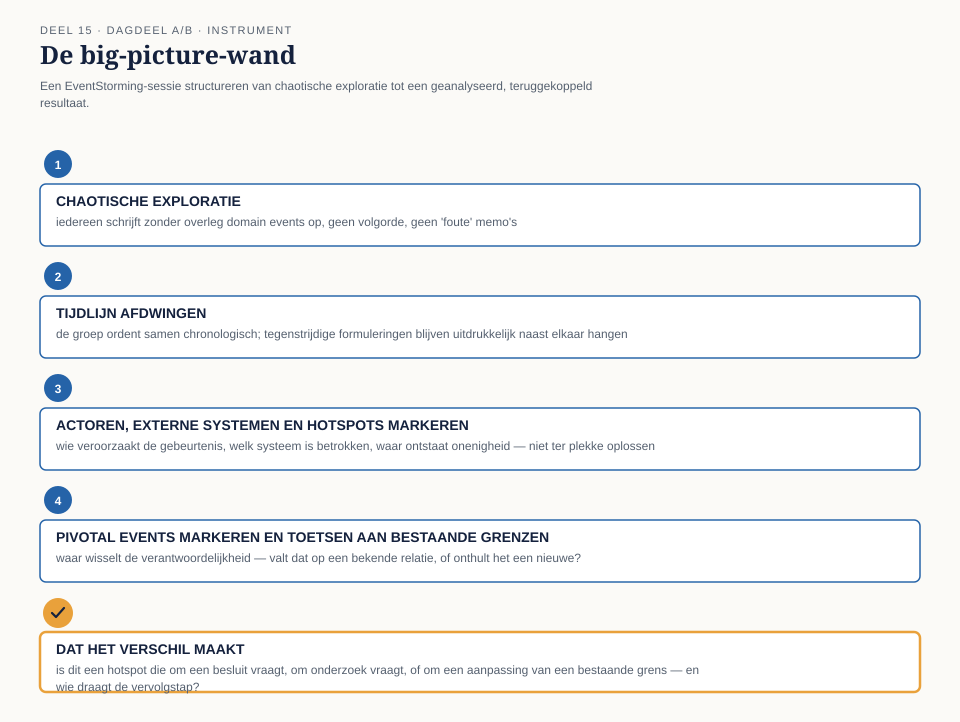

Deel 15 — EventStorming I: big picture van het hele landschap
Reader · Ductus-cursus Domain-Driven Design · niveau 2 (professional) · deel 15 van 30 · twee dagdelen
15.1 Waar dit deel over gaat
Deel 14 sloot af met een vraag die Daan aan Iris niet kon beantwoorden: is de kaart van zeven relaties compleet? Het contextmap-team had, relatie voor relatie, zeven context-mappingpatronen vastgelegd — een zorgvuldig, maar stuksgewijs beeld. Dit deel stelt daar iets tegenover dat niet stuksgewijs is: één sessie waarin vertegenwoordigers van alle vijf systemen tegelijk, aan één muur, het complete mutatielandschap in gebeurtenissen vastleggen. Geen relatie per keer. Alles tegelijk.
Dat is EventStorming op big-picture-niveau: een werkvorm, ontwikkeld door Alberto Brandolini, waarin een groep — met domeinexperts, ontwikkelaars en al wie het domein raakt in één ruimte — het gedrag van een systeem of landschap reconstrueert door het uit te schrijven als een opeenvolging van gebeurtenissen, op oranje memo’s, tegen een lange muur. Big picture is het eerste van drie niveaus waarop EventStorming wordt ingezet (de andere twee, procesmodellering en ontwerpniveau, komen in deel 16 aan bod): het gaat hier niet om één proces in detail, maar om het complete landschap in grove lijnen — breed vóór diep.
Dit deel beslaat, conform het familiemodel, twee dagdelen in plaats van één: EventStorming laat zich niet uitleggen, alleen ervaren, en een sessie die er recht aan doet — chaotische exploratie, een tijdlijn afdwingen, hotspots vinden, en vervolgens dat materiaal analyseren — past niet in 3,5 uur. Dagdeel A is voorbereiding en uitvoering: de sessie zelf, aan de muur, met alle vijf systemen vertegenwoordigd. Dagdeel B is verwerking: wat de wand oplevert, wat die onthult over aannames die tot dan toe alleen impliciet bestonden, en hoe dat materiaal teruggekoppeld wordt aan de context map uit deel 11-14.
Aan het eind van dit deel kun je:
- de big-picture-vorm van EventStorming toepassen: chaotische exploratie, tijdlijn, actoren, externe systemen, hotspots en pivotal events;
- een big-picture-sessie voorbereiden en faciliteren voor een landschap met meerdere systemen en meerdere teams, inclusief de rol van een facilitator die het domein zelf niet hoeft te kennen;
- met de big-picture-wand een sessie structureren van chaotische exploratie tot een geanalyseerd, gedeeld beeld;
- het resultaat van een big-picture-sessie terugkoppelen aan een bestaande context map, en onderscheiden welke onthulde aannames een bestaand patroon bevestigen en welke het juist ondermijnen.
DAGDEEL A — Voorbereiding en uitvoering
15.2 De casus: wat er gebeurt als je het hele landschap in één keer bekijkt
Uit het casusdossier: Daan heeft Iris’ vraag “is dit compleet?” beantwoord met een eerlijk “nee” — en met een voorstel.
Daan brengt het voorstel de week na deel 14 terug naar Iris, met Foppe naast zich. “We hebben het landschap zeven keer bekeken, telkens twee systemen tegelijk. Wat we nog niet hebben gedaan, is het hele landschap in één keer bekijken — met alle vijf systemen tegelijk in de ruimte, niet na elkaar.” Iris, met haar gebruikelijke weinig geduld voor werk zonder zichtbaar doel, vraagt meteen: “En wat levert dat op wat de zeven relaties nog niet opleverden?” Foppe antwoordt namens Daan, maar zonder inhoudelijk vooruit te lopen: “De zeven relaties vertellen je hoe twee systemen zich tot elkaar verhouden. Ze vertellen je niet wat er, over het hele landschap heen, in welke volgorde daadwerkelijk gebeurt als een deelnemer morgen van baan verandert. Dat weet op dit moment niemand in deze kamer volledig — ieder van jullie kent zijn eigen stuk.”
Karsten, die als eerste sceptisch is over elke nieuwe sessievorm sinds WGP 2.0, vraagt door: “Dus we gaan weer een dag praten.” Foppe: “Nee. We gaan een muur vol hangen met wat er feitelijk gebeurt, in de volgorde waarin het gebeurt, opgeschreven door de mensen die het weten — niet door mij, en niet in een vergaderverslag achteraf.” Vera, gewend om precies te zijn, wil weten wat er anders is dan de sessies die het team al deed. Foppe: “Tot nu toe hebben jullie per relatie gesproken over wat twee systemen van elkaar nodig hebben. Vandaag gaan jullie niet praten over het landschap — jullie gaan het landschap opschrijven, met zijn vijven tegelijk, en dan pas kijken wat er staat.”
Iris geeft toestemming voor twee dagdelen — meer dan ze in eerste instantie wilde toezeggen — nadat Foppe haar wijst op de botsing die deel 14 al één keer blootlegde: twee deelprojecten die, ieder voor zich verdedigbaar, tegenstrijdige aannames deden over wat een dienstverband is. “Als er meer van dat soort verborgen aannames in het landschap zitten,” zegt Foppe, “wil je die liever nu ontdekken, aan een muur, dan over acht maanden, in productie.”

15.3 EventStorming: feiten opschrijven, in de volgorde waarin ze gebeuren
EventStorming is een werkvorm waarin een groep het gedrag van een domein reconstrueert door het als een reeks domain events uit te schrijven: dingen die zijn gebeurd, verwoord in de verleden tijd, op losse memo’s, tegen een muur die lang genoeg is om een tijdlijn te dragen. De keuze voor domain events als eenheid is precies: een gebeurtenis is een feit waarover iedereen in de ruimte het eens kán zijn (“de deeltijdwijziging is doorgevoerd”), terwijl een procesbeschrijving, een systeemnaam of een technische term precies het soort discussie oproept die de sessie eerder vertraagt dan vooruit helpt. Oranje is de gangbare kleur voor domain events, en die kleur keert in dit deel steeds terug — niet omdat de kleur zelf iets betekent, maar omdat een gedeelde conventie de wand in één oogopslag leesbaar houdt voor iedereen die erlangs loopt.
Big picture is het breedste van de drie niveaus waarop EventStorming wordt toegepast. Het doel is niet compleetheid of precisie — dat komt in deel 16, op proces- en ontwerpniveau — maar overzicht: een landschap dat niemand in de ruimte in zijn geheel kent, in één sessie zichtbaar maken door de kennis van alle aanwezigen naast elkaar te leggen. Dat overzicht ontstaat niet door vooraf een structuur op te leggen, maar door de sessie in een vaste volgorde van fasen te laten verlopen:
Chaotische exploratie. Iedereen schrijft, onafhankelijk van elkaar en zonder overleg, zoveel mogelijk domain events op die hij of zij uit het eigen deel van het landschap kent, en plakt ze ergens op de muur — zonder volgorde, zonder overleg over dubbelingen. Deze fase is bewust ongestructureerd: het doel is volume en diversiteit van perspectief, niet consensus. Consensus komt later, en te vroeg naar consensus zoeken is de meest voorkomende manier waarop een big-picture-sessie zijn eigen waarde ondergraaft — een team dat meteen begint te overleggen over de “juiste” volgorde, verliest het perspectief van wie stil blijft zitten tijdens die discussie.
Tijdlijn afdwingen. Zodra de muur vol hangt met ongesorteerde events, dwingt de groep, samen, een chronologische volgorde af: van links naar rechts, van het eerste dat gebeurt naar het laatste. Dubbele events worden samengevoegd, tegenstrijdige formuleringen van hetzelfde feit worden zichtbaar naast elkaar gelegd in plaats van stilzwijgend één ervan te kiezen. Deze fase is waar de eerste onenigheid ontstaat — en waar die onenigheid, anders dan in een regulier overleg, letterlijk zichtbaar blijft hangen in plaats van te verdwijnen in een notulenzin.
Actoren en externe systemen. Wie of wat veroorzaakt een gebeurtenis, en welke systemen buiten het eigen team raken de tijdlijn? Deze laag voegt, naast de events zelf, kleine gele memo’s toe voor actoren (een werkgever, een deelnemer, een medewerker) en een andere kleur voor externe systemen die relevant zijn maar niet zelf in de kamer vertegenwoordigd zijn.
Hotspots. Overal waar de groep het oneens is, waar een vraag onbeantwoord blijft, of waar iemand een risico signaleert, komt een opvallende markering — meestal felroze of paars, expres storend tussen de oranje rust van de tijdlijn. Een hotspot is geen fout die hersteld moet worden vóór het einde van de sessie; het is precies het soort vondst waarvoor de sessie wordt gehouden. Brandolini’s eigen aanpak benadrukt dit: hotspots zijn de opbrengst, niet de ruis.

15.4 Foppe als facilitator: het domein niet kennen als kracht
Foppe leidt deze sessie zelf, en dat is een andere rol dan hij tot nu toe binnen het contextmap-team vervulde. Tot en met deel 14 begeleidde hij methodisch zonder zelf inhoudelijke keuzes te maken; bij EventStorming is die scheiding nog scherper, omdat de facilitator hier letterlijk niet de pen vasthoudt over de inhoud van de memo’s. Foppe’s terugkerende zin — “ik ken jullie domein niet, ik ken alleen de vragen die je jezelf nog niet hebt gesteld” — krijgt in dit deel zijn duidelijkste toepassing: precies omdát hij het Meridiaan-landschap niet kent, kan hij vragen stellen die niemand binnen het team meer stelt, omdat ze te vertrouwd zijn geworden met hun eigen stuk om het nog vreemd te vinden.
Een facilitator bij big-picture EventStorming bewaakt drie dingen, en geen daarvan is de inhoud:
De volgorde van de fasen. Een groep die tijdens de chaotische exploratie al begint te discussiëren over de tijdlijn, verliest het voordeel van onafhankelijke perspectieven. Foppe’s taak is niet inhoudelijk bijsturen, maar simpelweg: “schrijf nu, overleg straks.”
Wie niet aan het woord komt. Otto, ongeduldig en gewend het hardst aan te dringen op tempo, domineert van nature de tijdlijndiscussie. Priya, met weinig historische bagage over de andere systemen, houdt zich juist makkelijk stil wanneer ze een gebeurtenis niet herkent. Foppe’s rol is expliciet vragen: “Priya, herken jij dit vanuit Wegwijzer, of ontbreekt hier iets?” — niet omdat Priya’s antwoord belangrijker is dan Otto’s, maar omdat een muur die alleen het perspectief van de luidste stem weergeeft, geen big picture is.
Het onderscheid tussen een hotspot en een meningsverschil dat om een besluit vraagt. Niet elke onenigheid hoort op dit moment opgelost te worden. Foppe’s taak is te herkennen wanneer een discussie de sessie dreigt te vertragen omdat de groep een besluit wil forceren dat hier niet thuishoort — en die discussie dan te markeren als hotspot in plaats van hem te laten uitvechten aan de muur.
Dat Foppe geen inhoudelijke keuzes maakt, betekent niet dat hij passief is. Zijn actieve rol beperkt zich tot het proces: wanneer, wie, en wat als hotspot wordt vastgelegd in plaats van als besluit.
15.5 Voorbereiding: wie, waar, en met welke vraag
Een big-picture-sessie over een compleet landschap vraagt voorbereiding die verder gaat dan een goede uitnodiging. Drie keuzes bepalen of de sessie iets oplevert.
Wie staat aan de muur. Het contextmap-team is, met vertegenwoordiging vanuit elk van de vijf systemen, precies de juiste samenstelling: Vera (KERN), Karsten (Werkgeversportaal), Otto (Mutatieplatform), Priya (Wegwijzer), en voor het Nabestaandenloket dit keer niet alleen Willemijn maar ook een collega die de dagelijkse uitvoering kent — big picture werkt het beste met mensen die het domein dagelijks leven, niet uitsluitend met architecten die het van een afstand overzien. Merel Duijvestein sluit aan vanuit haar rol als business analist binnen het programma; haar eigen leerlijn wordt hier niet uitgewerkt, maar haar aanwezigheid aan de muur is functioneel — waar Daan grenzen tekent, brengt zij de samenhang tussen de deelprojecten in.
De vraag waarmee de sessie opent. Een big-picture-sessie zonder scherpe openingsvraag verzandt in willekeur. Foppe formuleert de vraag voor deze sessie samen met Daan, niet als een enkele zin maar als een afgebakende reikwijdte: “alles wat er gebeurt vanaf het moment dat een mutatie ergens in het landschap ontstaat, tot het moment dat die mutatie overal is doorgevoerd waar hij hoort te landen.” Die afbakening sluit bewust aan bij de aanleiding uit het casusdossier — de botsing rond de deeltijdwijziging — zonder de sessie tot dat ene voorbeeld te beperken.
De ruimte en het materiaal. Big-picture EventStorming vraagt fysiek meer ruimte dan een reguliere werksessie: een muur van tien meter of meer is geen overdrijving bij een landschap van vijf systemen, en digitale varianten vragen een even grote, oneindig scrollbare canvas. Miro is in de praktijk een veelgebruikt referentiepunt voor digitale EventStorming-sessies — met een kant-en-klaar bordformaat, oneindige canvas en gedeelde cursors die het gevoel van gezamenlijk aan één muur staan het dichtst benaderen wanneer fysiek samenkomen niet mogelijk is. Wie zonder licentiekosten wil werken, vindt in FigJam (of een vergelijkbaar vrij toegankelijk whiteboard met oneindige canvas en plaknotities) een bruikbaar alternatief; de werkvorm zelf hangt niet af van het gekozen gereedschap. Toolkeuzes en klikpaden staan, conform de opzet van deze cursus, in de Toolbijlage — dit deel behandelt de werkvorm zelf, toolonafhankelijk.
Foppe’s laatste voorbereidingsafspraak met Daan is er een over toon, niet over logistiek: “Zeg tegen iedereen vooraf dat er geen foute memo’s bestaan in de eerste fase. Hoe meer mensen bang zijn iets verkeerd op te schrijven, hoe leger de muur blijft — en een lege muur levert niets op.”

15.6 De sessie: chaos, tijdlijn, en de eerste hotspots
Uit het casusdossier, vervolgd: de sessie begint zoals Foppe heeft aangekondigd — met stilte, geen overleg.
De eerste twintig minuten verlopen ongemakkelijk stil. Otto plakt binnen twee minuten tien memo’s; Priya schrijft er twee, aarzelend, en kijkt op om te zien of iemand meekijkt. Foppe grijpt niet in — dit is precies de fase waarin hij niets doet dan de tijd bewaken. Tegen het einde van de chaotische fase hangt de muur vol: ruim honderdtwintig memo’s, in willekeurige clusters, zonder enige volgorde.
Dan begint de tijdlijnfase, en de eerste botsing komt sneller dan iedereen verwacht. Vera plakt een memo “dienstverband gewijzigd” ergens in het midden van wat zij als logische volgorde ziet. Karsten schuift hem, zonder overleg, een stuk naar links: “Nee — bij ons in het Werkgeversportaal is dit twee losse gebeurtenissen: eerst ‘uitdiensttreding gemeld’, dan, soms weken later, ‘nieuw dienstverband gestart’. Wat jij noemt is bij ons geen wijziging, het is een opeenvolging.” Vera: “Bij KERN is het één gebeurtenis met één ingangsdatum.” Foppe grijpt niet in om te bepalen wie gelijk heeft — hij plakt een felroze memo naast de twee versies: hotspot — is een deeltijdwijziging één gebeurtenis of twee, en verschilt dat per systeem of is het een onopgeloste tegenstrijdigheid?
Dit is, zoals Daan later tegen Iris zal zeggen, precies de botsing uit paragraaf 3 van het casusdossier — dezelfde botsing die twee maanden bouwwerk kostte voordat hij aan het licht kwam — nu zichtbaar binnen twintig minuten, op een muur, vóórdat er een regel code voor is geschreven.
De tijdlijnfase levert nog vijf hotspots op die de middag: een gebeurtenis waarvan niemand met zekerheid kan zeggen welk systeem hem als eerste registreert; een externe melding (een overlijden, gemeld via een derde partij) waarvan de precieze aankomstroute in het landschap bij niemand volledig bekend is; twee verschillende definities van “actieve deelnemer” tussen KERN en Wegwijzer; een gebeurtenis die Otto voor het Mutatieplatform als vanzelfsprekend beschouwt, maar die nergens in de huidige systemen daadwerkelijk wordt vastgelegd; en een keten van vier events rond een scheiding die, zo blijkt wanneer de groep hem hardop doorloopt, in de praktijk soms in een andere volgorde verloopt dan wat er nu hangt, afhankelijk van wie een scheiding het eerst meldt.
Aan het eind van dagdeel A hangt er een tijdlijn met actoren, externe systemen en zes hotspots — en geen enkele daarvan is die middag opgelost. Dat is geen tekortkoming van de sessie. Foppe sluit dagdeel A af met een zin die het onderscheid met de vorige delen scherp maakt: “Jullie hebben vandaag niets besloten. Jullie hebben voor het eerst gezien wat er allemaal nog niet besloten is. Morgenochtend gaan we dat gebruiken.”

DAGDEEL B — Verwerking en opbrengst
15.7 De ochtend erna: van een volle muur naar een leesbare kaart
Dagdeel B begint niet aan de muur, maar ervoor: het team bekijkt, in stilte, eerst tien minuten lang wat er de vorige middag is ontstaan — een instructie van Foppe, niet toevallig een spiegeling van de stille chaotische fase waarmee dagdeel A opende. “Gisteren hebben jullie de muur gevuld zonder overleg. Vandaag kijken jullie ernaar zonder overleg, vóórdat we erover praten.”
Wat een volle muur van event-memo’s, actoren en hotspots niet vanzelf oplevert, is een antwoord op de vraag waarvoor het contextmap-team ooit begon: waar liggen de grenzen van het landschap, en kloppen de zeven relaties uit deel 13-14 nog, nu het geheel zichtbaar is? Dagdeel B is gewijd aan die vertaalslag — van een tijdlijn vol feiten naar een geanalyseerd, bruikbaar beeld.
Twee bewegingen staan centraal: het clusteren van events rond pivotal events, en het toetsen van wat de muur onthult aan de bestaande context map.
15.8 Pivotal events: waar het landschap van eigenaar wisselt
Een pivotal event is een gebeurtenis op de tijdlijn waar iets fundamenteel verandert in wie verantwoordelijk is, of in welk deel van het landschap de leiding overneemt — een omslagpunt, geen gewone stap in de rij. Het herkennen van pivotal events is de eerste analytische stap in dagdeel B, en de reden waarom die stap zinvol is, ligt direct in het verlengde van waar niveau 2 al mee bezig is: pivotal events liggen vaak precies op de plek waar een bounded-contextgrens hoort te lopen.
Het team markeert, werkend van links naar rechts over de tijdlijn, elk punt waar de “eigenaar” van het proces wisselt. “Uitdiensttreding gemeld” is zo’n punt: vóór dat event ligt het initiatief bij het Werkgeversportaal, ná dat event moet het Mutatieplatform het oppakken. “Recht op partnerpensioen vastgesteld” is een ander: het moment waarop verantwoordelijkheid overgaat van de generieke mutatieverwerking naar het Nabestaandenloket specifiek.
Vier pivotal events komen boven op de tijdlijn te staan, en het team ontdekt iets dat niemand vooraf had voorspeld: drie van de vier pivotal events vallen, wanneer je ze naast de context map van deel 11-14 legt, precies op een bestaande relatie — maar het vierde valt op een plek waar helemaal geen relatie is vastgelegd. Dat vierde pivotal event, de overgang van “melding scheiding ontvangen” naar “gevolgen voor pensioenaanspraken berekend”, loopt dwars over een stuk landschap dat in de zeven relaties uit deel 13-14 niet als eigen relatie is benoemd — het gebeurt, informeel, deels binnen KERN, deels binnen het Mutatieplatform, zonder dat ooit is vastgesteld welk systeem hier eigenlijk leidend is.

15.9 De hotspots geanalyseerd: aannames die impliciet bleven
De zes hotspots uit dagdeel A krijgen in dagdeel B elk een korte, gestructureerde bespreking — niet om ze definitief op te lossen (dat is, voor de meeste, werk voor latere delen of voor het programma zelf), maar om vast te stellen wát voor soort hotspot het is en wie de vervolgstap draagt.
De deeltijdwijziging: één gebeurtenis of twee (Vera versus Karsten). Dit is dezelfde tegenstelling die de botsing uit het casusdossier veroorzaakte, nu voor het eerst expliciet naast elkaar gelegd in plaats van in twee aparte deelprojecten verborgen. Het team stelt vast dat dit geen hotspot is die vandaag wordt opgelost, maar wel een hotspot die niet terug de sessie uit mag zonder eigenaar: Daan noteert hem als input voor deel 16, waar het team met domain storytelling precies dit deelproces gaat uitdiepen.
De aankomstroute van een externe overlijdensmelding. Niemand in de ruimte kan volledig navertellen via welke systemen een melding van een externe partij het landschap binnenkomt. Foppe noemt dit een ander type hotspot dan de eerste: geen meningsverschil, maar een kennislacune. De actie is niet “beslissen”, maar “uitzoeken” — een concrete vervolgstap voor Otto en Vera samen, buiten deze sessie om.
Twee definities van “actieve deelnemer”. KERN en Wegwijzer hanteren, zo blijkt, niet dezelfde definitie — KERN rekent iemand actief zolang er geen formele uitdiensttreding is verwerkt, Wegwijzer toont iemand als actief zodra er nog een lopend dienstverband zichtbaar is, ook als de verwerking bij KERN achterloopt. Priya herkent hier meteen het patroon uit deel 14: dit is precies het soort verschil dat de conformist-relatie tussen Wegwijzer en KERN kwetsbaar maakt, wanneer niemand het ooit hardop heeft vastgesteld.
Een event dat Otto vanzelfsprekend vindt, maar dat nergens wordt vastgelegd. Otto had op de tijdlijn “mutatie geprioriteerd” geplakt — een stap die hij in zijn hoofd al als onderdeel van het toekomstige Mutatieplatform ziet, maar die in het huidige landschap nergens als expliciete gebeurtenis bestaat. Dit is geen hotspot over het bestaande landschap, maar een aanwijzing voor het ontwerp van het nog te bouwen systeem — Foppe markeert het apart, niet tussen de hotspots over het huidige landschap.
De volgorde rond een scheiding, die soms afwijkt van wat er hangt. Wanneer het team de scheidingsketen hardop doorloopt met een concreet voorbeeld, blijkt de volgorde te verschillen afhankelijk van wie de scheiding het eerst meldt — de deelnemer zelf, de werkgever, of een signaal vanuit KERN. Dit is de meest complexe hotspot van de zes: geen enkelvoudige tegenstelling, maar een proces met meerdere, elk legitieme, paden. Het team besluit deze hotspot expliciet mee te geven aan deel 16, waar procesmodellering en domain storytelling het instrumentarium bieden om meerdere paden naast elkaar te expliciteren — iets waar big-picture EventStorming zelf niet voor bedoeld is.
Het onbenoemde pivotal event rond de scheidingsafhandeling (uit §15.8). Deze hotspot krijgt de zwaarste vervolgstap: Daan neemt hem mee terug naar de context map als een achtste, nog niet benoemde relatie tussen KERN en het Mutatieplatform — een relatie die de zeven van deel 13-14 niet volledig dekten, precies zoals uitwerking 6c van deel 14 al voorzag dat de kaart van zeven relaties niet compleet zou zijn.
15.10 Terugkoppeling aan de context map: wat bevestigd wordt, wat wankelt
Het team legt, aan het eind van de ochtend, de wand naast de zeven relatiebladen van deel 13-14. De uitkomst is gemengd, en dat is precies waarom deze sessie is gehouden.
Bevestigd. De relatie Nabestaandenloket-KERN als anti-corruption layer houdt stand: de tijdlijn laat zien dat het Nabestaandenloket bij elke relevante gebeurtenis zijn eigen, vertaalde begrippen gebruikt, precies zoals het patroon voorschrijft. Willemijn, die deze keer zelf aan de muur stond in plaats van incidenteel aangehaakt, bevestigt dat de vertaallaag in de praktijk exact doet wat het grensbeschermingsblad van deel 14 vastlegde.
Wankel. De conformist-relatie tussen Wegwijzer en KERN, in deel 14 met de nodige zorgvuldigheid als bewuste keuze vastgesteld, blijkt in het licht van de hotspot over “actieve deelnemer” minder solide dan gedacht: het is geen probleem met het patroon zelf, maar met de aanname dat KERN en Wegwijzer het model werkelijk delen. Het team stelt vast dat dit geen reden is om het patroon te herzien, maar wel om de afspraak uit deel 14 (een vaste contactpersoon die waarschuwt bij wijzigingen) uit te breiden met een expliciete afstemming over deze twee definities.
Ontbrekend. Het achtste, onbenoemde relatiegebied rond de scheidingsafhandeling tussen KERN en het Mutatieplatform bestond vóór deze sessie eenvoudigweg niet als erkend onderdeel van de context map. Vera formuleert het scherp: “We hebben zeven relaties benoemd omdat we zeven patronen wilden illustreren. Het landschap zelf telt zich niet af op zeven.”
Iris, die voor het slot van dagdeel B is aangeschoven zoals ze dat ook bij deel 14 deed, stelt opnieuw haar vraag: “Is de kaart nu compleet?” Dit keer geeft Daan een ander antwoord dan bij deel 14. “Nog niet. Maar voor het eerst weten we wélke stukken we nog missen, in plaats van te vermoeden dat er iets mist.” Foppe voegt eraan toe, met de zin die het hele deel samenvat: “Dat is het verschil tussen een sessie die vragen oplost en een sessie die de juiste vragen zichtbaar maakt. Vandaag hebben jullie het tweede gedaan — en dat is, op dit punt in het programma, meer waard.”

15.11 De werkvorm: de big-picture-wand
Het instrument van dit deel is de big-picture-wand: een sjabloon om een big-picture EventStorming-sessie te structureren van chaotische exploratie tot een geanalyseerd, aan de bestaande context map teruggekoppeld resultaat. Anders dan de instrumenten van eerdere delen wordt de big-picture-wand niet op één vel ingevuld, maar over de volle breedte van een sessie opgebouwd — het instrument ís de muur.
De vier stappen
Stap 1 — Chaotische exploratie. Iedere deelnemer schrijft, zonder overleg, domain events op uit het eigen deel van het landschap en plakt ze op de wand. Geen volgorde, geen correctie, geen “foute” memo’s. Deze stap eindigt pas wanneer het tempo van nieuwe memo’s zichtbaar afneemt, niet op een vaste kloktijd.
Stap 2 — Tijdlijn afdwingen. De groep ordent samen de memo’s chronologisch, voegt duplicaten samen, en laat tegenstrijdige formuleringen van hetzelfde feit uitdrukkelijk naast elkaar hangen in plaats van er stilzwijgend één te kiezen. Elke tegenstrijdigheid die hier ontstaat, is materiaal voor stap 3, niet een probleem dat nu al moet worden weggewerkt.
Stap 3 — Actoren, externe systemen en hotspots markeren. Wie of wat veroorzaakt elke gebeurtenis, welke systemen buiten de kamer zijn betrokken, en waar ontstaat onenigheid, een onbeantwoorde vraag, of een gesignaleerd risico? Hotspots krijgen een eigen, opvallende kleur en worden niet ter plekke opgelost.
Stap 4 — Pivotal events markeren en toetsen aan bestaande grenzen. Waar wisselt de verantwoordelijkheid van de ene naar de andere partij op de tijdlijn? Leg elk pivotal event naast een bestaande context map, indien die er is: valt het op een bekende relatie, of onthult het een relatiegebied dat nog niet is benoemd?
Het veld dat het verschil maakt
Onder de vier stappen staat een vijfde, afsluitend veld — hier niet als een vak op een blad, maar als een vaste vraag waarmee elke hotspot en elk pivotal event wordt afgesloten voordat de sessie eindigt:
Dat het verschil maakt: is dit een hotspot die om een besluit vraagt, om verder onderzoek vraagt, of om een aanpassing van een bestaande grens vraagt — en wie draagt die vervolgstap, buiten deze sessie?
Dit veld voorkomt het risico dat een big-picture-sessie eindigt met een volle, indrukwekkende muur die vervolgens nergens toe leidt. Foppe past dit veld letterlijk toe op elk van de zes hotspots in §15.9: bij de deeltijdwijziging wordt de vervolgstap “input voor deel 16”; bij de externe overlijdensmelding “uitzoeken door Otto en Vera”; bij het onbenoemde relatiegebied “achtste relatie op de context map, mee te nemen door Daan.” Zonder deze laatste stap blijft een big-picture-sessie, hoe waardevol de ontdekkingen ook zijn, een momentopname die niemand ergens brengt.

15.12 Terug naar de casus, en vooruit
Aan het eind van dagdeel B hangt er geen nieuw document, geen bijgewerkt sjabloon — er hangt een muur, gefotografeerd en gedigitaliseerd voor het programma-archief, met een tijdlijn, vier pivotal events, zes geanalyseerde hotspots en één nieuw, achtste relatiegebied dat de context map van deel 13-14 nog niet kende. Iris neemt dat resultaat mee de programmastuurgroep in, met een aantekening die Daan zelf toevoegt: drie van de zes hotspots vragen inhoudelijk vervolgwerk dat buiten deze cursus valt (de aankomstroute van de externe melding, de precieze definitie-afstemming tussen Wegwijzer en KERN, de scope van het achtste relatiegebied) — niet omdat de sessie tekortschoot, maar omdat een big-picture-sessie per ontwerp geen besluiten oplevert, alleen een scherper beeld van wat er besloten moet worden.
Twee hotspots blijven nadrukkelijk liggen voor het vervolg van de cursus zelf: de deeltijdwijziging die wel of niet één gebeurtenis is, en de scheidingsketen met zijn meerdere, elk legitieme volgordes. Beide zijn precies het soort materiaal waarvoor deel 16 bestaat: waar dit deel het landschap breed in kaart bracht, zoomt deel 16 in op één deelproces tegelijk, met EventStorming op proces- en ontwerpniveau en met domain storytelling als aanvullend instrument om de meerdere paden van de scheidingsketen expliciet te maken. Foppe kondigt dat verschil zelf aan, aan het eind van dagdeel B: “Vandaag was breed vóór diep. Volgende keer gaan we diep — op precies de plekken die vandaag zijn blootgelegd.”